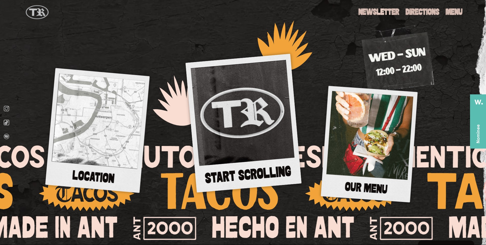
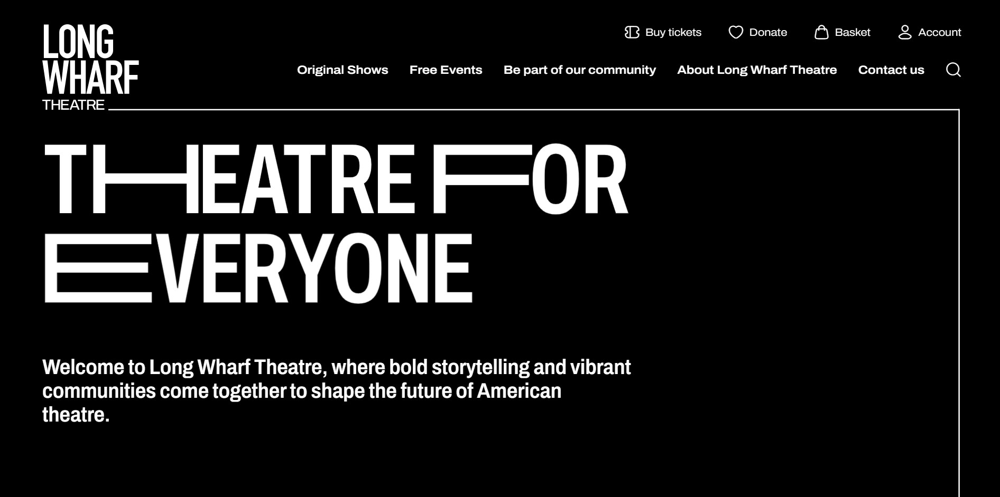
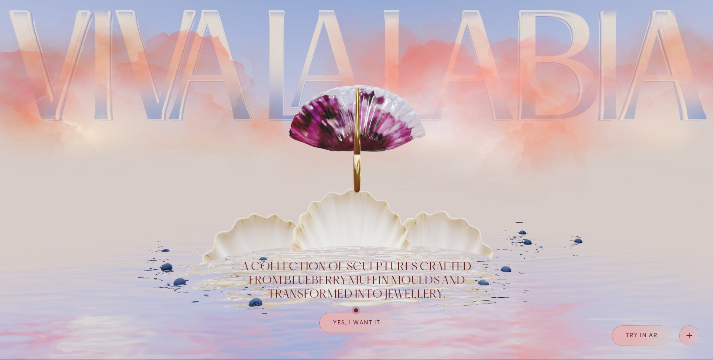
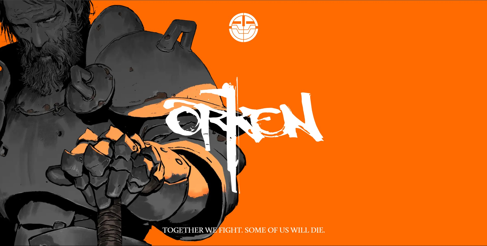

Taquería RicoEl diseño de la página principal destaca por su ser tan original. Siento que refleja muy bien la esencia de la cultura mexicana con la elección de esa tipografía. Además, es muy interesante que la navegación sea horizontal, en vez de ser el típico scroll hacia abajo. |
 |
|  |
Long Wharf TheatreMe pareció super interesante el uso de la tipografía y cómo han hecho un montion interactivo para el landing. La composición general de la página me ha encantado. |
Viva la labiaDe esta página destaca su increíble experiencia de usuario (UI), ya que las microinteracciones que tiene lo vuelven un sitio memorable y único. Tiene una múscia que da a pensar que todo está medido al detalle y es muy interesante. |
 |
|  |
OrkenTenía que elegir una en la que la ilustración formase parte de los elementos principales que componen la página. En este caso no sólo decoran estéticamente, sino que tiene unas microinteracciones que me resultan fascinantes. Me ha encantado como combina el arte con la UI al hacer scroll. |